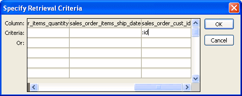

When you use nested reports either in composite reports or in other base reports, several enhancements and options are available. An easy way to see what you can do is to select the nested report and look at the Properties view for it.
Many of the options in the Properties view are described in Chapter 19, "Enhancing DataWindow Objects ." For example, using borders on nested reports is like using borders on any control.
This section describes activities that apply only to nested reports or that have special meaning for nested reports. It covers:
When you preview a report with nested reports, the width of the nested report may be unacceptable. This can happen, for example, if you change the design of the nested report or if you use newspaper columns in a nested report. The width of the nested report is not adjusted to fit its contents at runtime; if the report is too narrow, some columns may be truncated. For example, if the size of the nested report is set to 6 inches wide in the parent report, columns in the nested report that exceed that width are not displayed in the parent report.
 To adjust report width:
To adjust report width:
In the Design view, position the pointer near a vertical edge of the nested report and press the left mouse button.
Drag the edge to widen the nested report.
Check the new width in the Preview view.
When you Print preview a DataWindow that contains a nested N-Up report with newspaper columns across the page, you might find that blank pages display (and print) when the nested report in the detail band fills the page. This is because any white space at the bottom of the band is printed to a second page. You can usually solve this problem by dragging up the detail band to eliminate the white space between the nested report and the band, or even to overlap the bottom of the representation of the nested report.
You can change the nested report that is used. For example, you may work on several versions of a nested report and need to update the version of the nested report that the composite or base report uses.
 To change the nested report to a different report:
To change the nested report to a different report:
Select the nested report in the Design view.
In the Properties view, General property page, click the button next to the Report box.
Select the report you want to use, and click OK.
The name of the report that displays in the box in the Design view changes to the new one.
You can modify the definition of the nested report. You can do this directly from the composite report or base report that contains the nested report.
 To modify the definition of a nested report from
the composite report or base report:
To modify the definition of a nested report from
the composite report or base report:
Position the pointer on the nested report whose definition you want to modify, and display the pop-up menu.
Select Modify Report from the pop-up menu.
The nested report opens and displays in the painter. Both the composite or base report and the nested report are open.
Modify the report.
Select File>Close from the menu bar.
You are prompted to save your changes.
Click OK.
You return to the composite report or to the base report that includes the nested report.
After you have created a composite report, you might want to add another report. The following procedure describes how. For information on adding a nested report to a report that is not a composite report, see "Placing a related nested report in another report" or "Placing an unrelated nested report in another report".
 To add another nested report to a composite report:
To add another nested report to a composite report:
Open the composite report.
Select Insert>Control>Report from the menu bar.
Click in the Design view where you want to place the report.
The Select Report dialog box displays, listing defined reports (DataWindow objects) in the current target's library search path.
Select the report you want and click OK.
A box representing the report displays in the Design view.
The most efficient way to relate a nested report to its base report is to use retrieval arguments. If your nested report has arguments defined, you use the procedure described in this section to supply the retrieval argument value from the base report to the nested report. (The procedure described is part of the whole process covered in "Placing a related nested report in another report".)
Some DBMSs have the ability to bind input variables in the WHERE clause of the SELECT statement. When you use retrieval arguments, a DBMS with this capability sets up placeholders in the WHERE clause and compiles the SELECT statement once. PowerBuilder retains this compiled form of the SELECT statement for use in subsequent retrieval requests.
To enable PowerBuilder to retain and reuse the compiled SELECT statement:
 Nested reports in composite reports If the base report is a composite report, you need to define
retrieval arguments for the composite report before you can supply
them to the nested report.
Nested reports in composite reports If the base report is a composite report, you need to define
retrieval arguments for the composite report before you can supply
them to the nested report.
 To supply a retrieval argument value from the
base report to the nested report:
To supply a retrieval argument value from the
base report to the nested report:
Make sure that the nested report has been set up to take one or more retrieval arguments.
Select the nested report and then select the General page of the Properties view.
The Arguments box lists arguments defined for the nested report and provides a way for you to specify how information from the base report will supply the value of the argument to the nested report.

Supply the base report column that will supply the argument's value. To do this, click the button in the Expression column.
The Modify Expression dialog box displays. In this dialog box, you can easily select one of the columns or develop an expression. In the example, the column named id from the base report will supply the value for the argument :customerid in the nested report.
When you run the report now, you are not prompted for retrieval argument values for the nested report. The base report supplies the retrieval argument values automatically.
If you do not have arguments defined for the nested report and if database efficiency is not an issue, you can place a nested report in another report and specify criteria to pass values to the related nested report.
If you use the specify criteria technique, the DBMS repeatedly recompiles the SELECT statement and then executes it. The recompilation is necessary for each possible variation of the WHERE clause.
 To specify criteria to relate a nested report
to its base report:
To specify criteria to relate a nested report
to its base report:
Select the nested report and then select the Criteria page in the Properties view.
The Criteria property page provides a way for you to specify how information from the base report will supply the retrieval criteria to the nested report.
Click the button next to the criteria box.
The Specify Retrieval Criteria dialog box displays.
Enter the retrieval criteria and click OK.
The rules for specifying criteria are the same as for specifying criteria in the Quick Select data source. Multiple criteria in one line are ANDed together. Criteria entered on separate lines are ORed together.
In this example, the customer ID (the id column) is the retrieval criterion being supplied to the nested report. Notice that the id column is preceded by a colon (:), which is required:

When you run the report now, PowerBuilder retrieves rows in the nested report based on the criteria you have specified. In the example, the customer ID column in the base report determines which rows from the sales_order table are included for each customer.
Autosize Height should be on for all nested reports except graphs. This option ensures that the height of the nested report can change to accommodate the rows that are returned.
This option is on by default for all nested reports except graphs. Usually there is no reason to change it. If you do want to force a nested report to have a fixed height, you can turn this option off.
Note that all bands in the DataWindow also have an Autosize Height option. The option is off by default and must be on for the Autosize Height option for the nested report to work properly.
 To change the Autosize Height option for a nested
report:
To change the Autosize Height option for a nested
report:
In the Design view, select the nested report.
In the Properties view, select the Position properties page.
Select/clear the Autosize Height check box.
 Handling large rows To avoid multiple blank pages or other anomalies in printed
reports, never create a DataWindow object with a data row greater than
the size of the target page. To handle large text-string columns,
break the large string into a series of small strings. The smaller
strings are used to populate individual data rows within a nested
report instead of using a single AutoSize Height text column.
Handling large rows To avoid multiple blank pages or other anomalies in printed
reports, never create a DataWindow object with a data row greater than
the size of the target page. To handle large text-string columns,
break the large string into a series of small strings. The smaller
strings are used to populate individual data rows within a nested
report instead of using a single AutoSize Height text column.
PowerBuilder determines the appropriate Slide options when positioning the nested report(s) and assigns default values. Usually, you should not change the default values:
For more information, see "Sliding controls to remove blank space in a DataWindow object".
The New Page option forces a new page for a nested report used in a composite report. By default, this option is off.
 To specify that a nested report in a composite
report should begin on a new page:
To specify that a nested report in a composite
report should begin on a new page:
In the Design view, select the nested report.
In the Properties view, select the General page.
Select the New Page check box.
A check mark displays, indicating the option is selected.
The Trail Footer option controls the placement of the footer for the last page of a nested report in a composite report. By default, this option is on. The footer appears directly under the contents of the nested report and not at the bottom of the page.
 To specify that the footer should appear at the
bottom of the page:
To specify that the footer should appear at the
bottom of the page:
In the Design view, select the nested report.
In the Properties view, select the General page.
Clear the Trail Footer check box.
The check mark next to the option disappears, indicating the option is no longer selected. The footer appears at the bottom of the page on all pages of the nested report, including the last page. Note that if another nested report begins on the same page, the footer from the earlier report might be misleading or confusing.